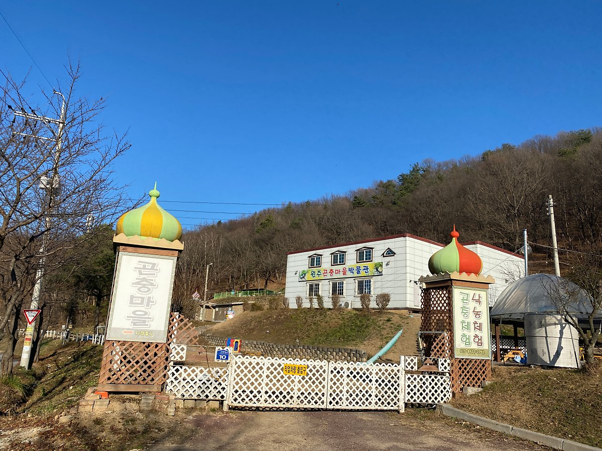
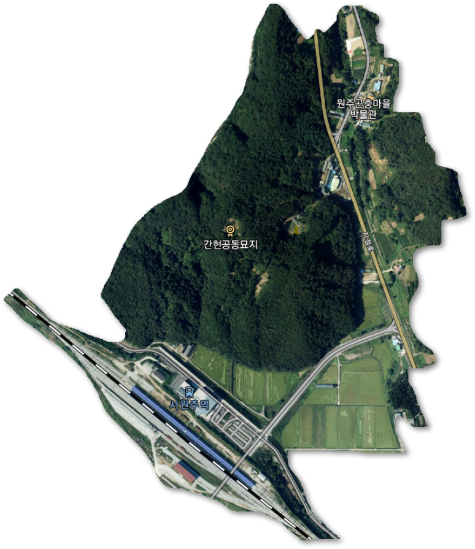
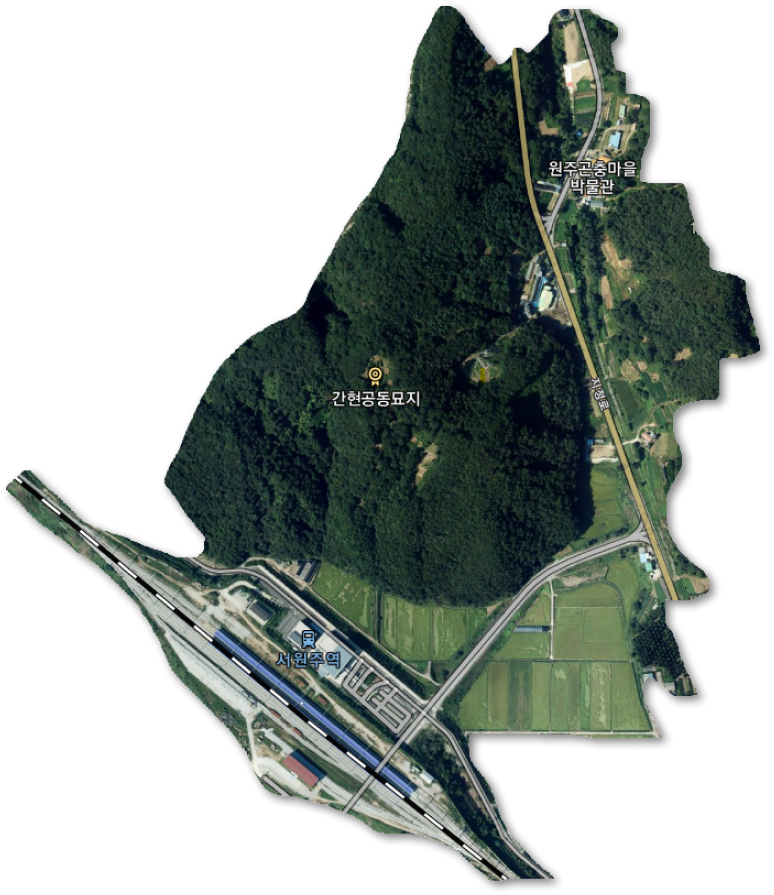

저희 원주 곤충마을 방문을 진심으로 환영합니다. "사람이 세상에 태어나 나와 가족으로부터 시작하여 학교로, 사회로, 점점 생활무대를"넓혀 가듯이 탐구의 세계도 마찬가지라고 생각합니다.
자기 몸과 주위에서 쉽게 볼 수 있는것부터 시작하여 "지구 , 태양계, 은하계를거쳐 우주전체를 이해할려고 노력하게 됩니다." 어린이 여러분들이 탐구의 세계를 넓혀가며 자연의 세계도쉽게 이해할수있도록 꾸민곳이 있습니다.
곤충을 길러보면서 자연에 대한 공부가 될 뿐 아니라 자연을 이해하게 됩니다. 자연을 사랑하고 아끼는 마음이 길러지는 그런 농장을 직접 방문해 보시지 않겠습니까? 21세기를 짊어질 어린이 여러분이 자연의 변화속에서 부족한 인내심도 저절로 생길 것입니다.

 
